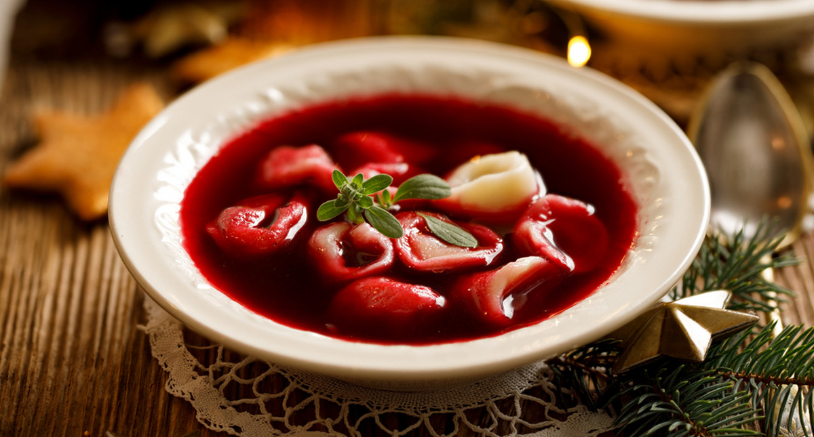

Dania główne to podstawowe dania na wigilijnym stole, bez których cała wigilia nie istniała, na niektóre z nich specjalnie się czeka cały rok :) Barszcz, uszka, ryby, pierogi itd.

Wykonał: Łukasz Sroka